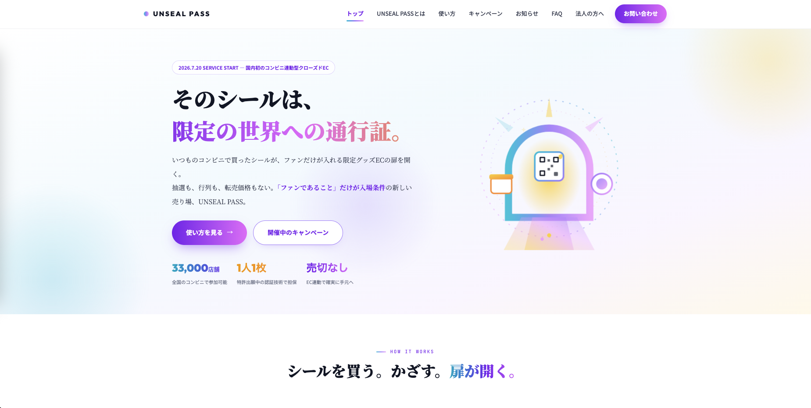
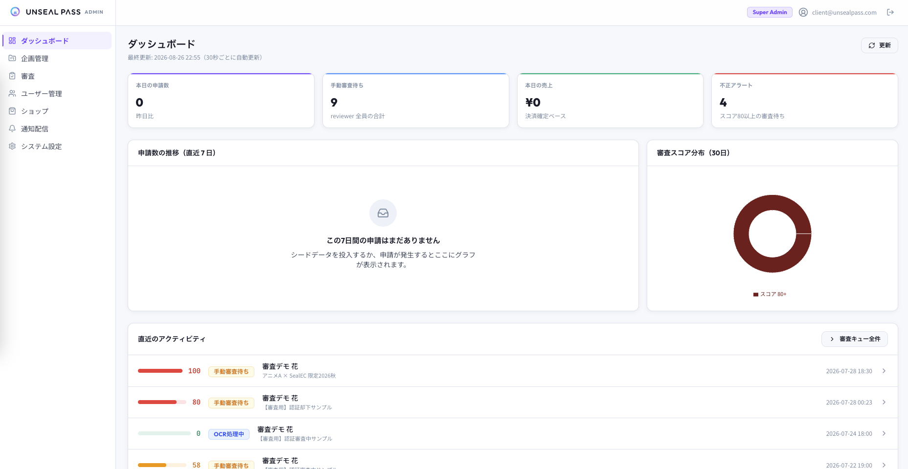
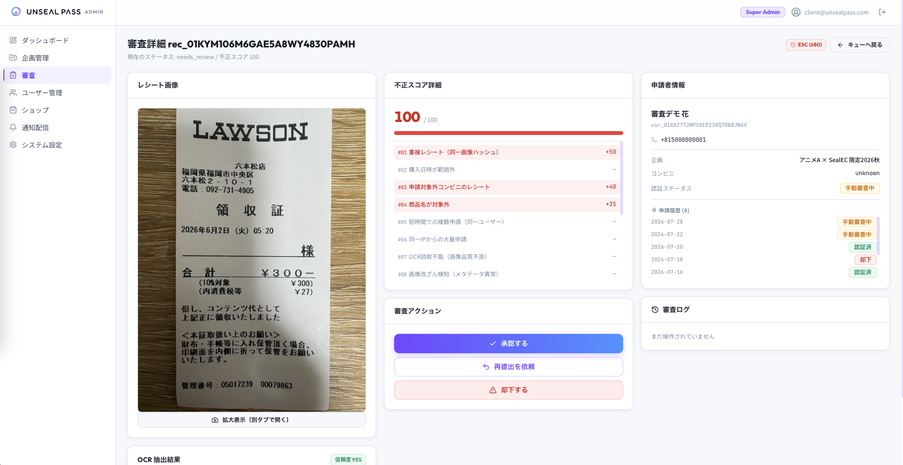
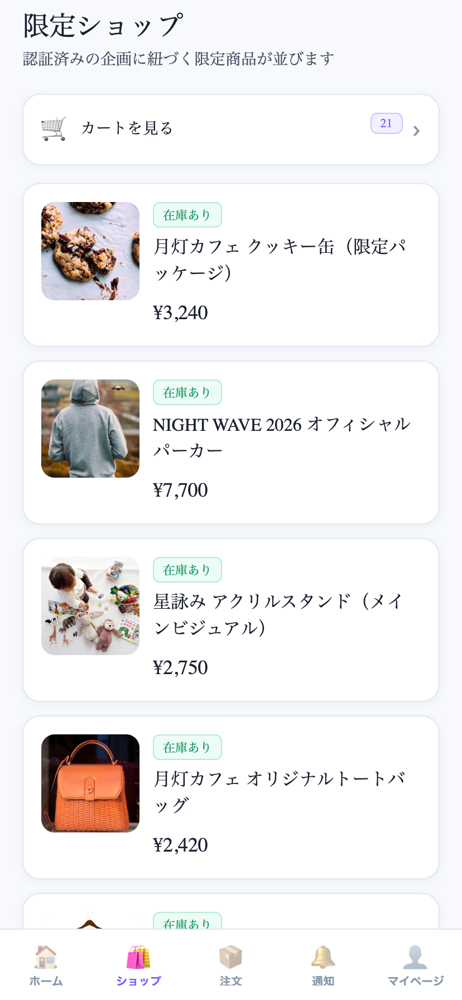
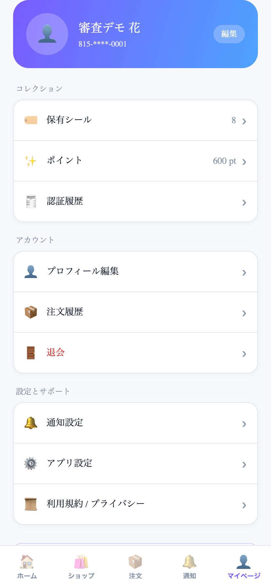
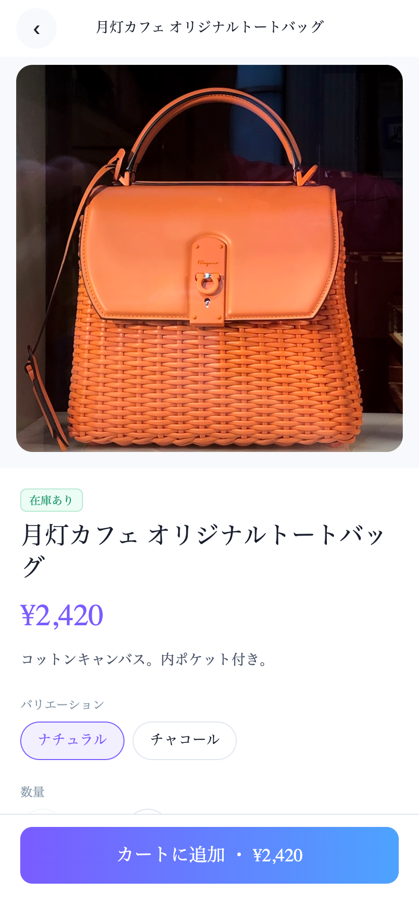
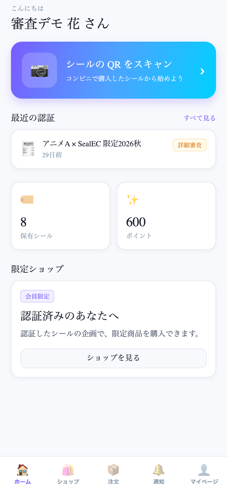

作品一覧へ戻る
unsealpass（コンビニシール購入者向け限定EC）
コンビニのマルチコピー機で販売するシールの購入者だけが、専用アプリ内で限定グッズを閲覧・購入できるEC。企画単位のQRとレシート画像審査で不正利用を抑え、未認証ユーザーには商品を出さない設計。







概要
コンビニのマルチコピー機で販売するシールの購入者だけが、専用アプリ内で限定グッズを閲覧・購入できるECサービス。企画単位で発行するQRとレシート画像の審査により不正利用を抑え、未認証ユーザーには商品を表示しない構成としました。Expoアプリ・Next.js管理画面・Fastify APIをPostgreSQL同一スキーマ上で構築しています。
技術的課題
- 企画ごとに同一QRを発行するため、使い回し・改ざんレシートをOCRと決定的ルールで自動判定する必要があった
- 管理者（RS256 JWT＋TOTP＋3ロールRBAC）と一般ユーザー（HS256 JWT＋SMS OTP）で認証を分離しつつ、在庫引当と決済確定の整合を取る必要があった
主な担当
- レシート審査をFastify上で実装。Gemini 2.5 Flash（Structured Output）で店舗・日時・金額を抽出し、jimpの知覚ハッシュと15ルールの決定的スコアで自動承認／差し戻し／手動審査へ分岐（アップロード応答後に非同期実行）
- ユーザー認証は電話番号OTP（Amazon SNS）＋HS256 JWT、管理者はRS256 JWT＋TOTP（otplib）。秘密はAES-256-GCMで保管。reviewer / admin / super_adminを分離し、不正スコア80以上の操作はadmin以上に制限
- 注文作成時にPrismaトランザクションで在庫減算・引当。Stripe Checkoutで課金し、Webhook（生ボディの署名検証）でpaid / payment_failedを冪等更新
- 管理画面をNext.js 14 App Router＋Radix UI＋TanStack Queryで実装（企画とHMAC付きQR、審査キュー、ユーザー、商品、注文、通知、設定、KPI）
- モバイルをExpo SDK 56／Expo Routerで実装（カメラQR、レシート投稿、カート、決済、SecureStore、Expo Push）
成果
- ステージングはGitHub ActionsのセルフホストランナーからEC2＋PM2へ自動デプロイする構成を整備
- モバイルはEASのproductionチャネルとストア審査用ログインまで実装済み